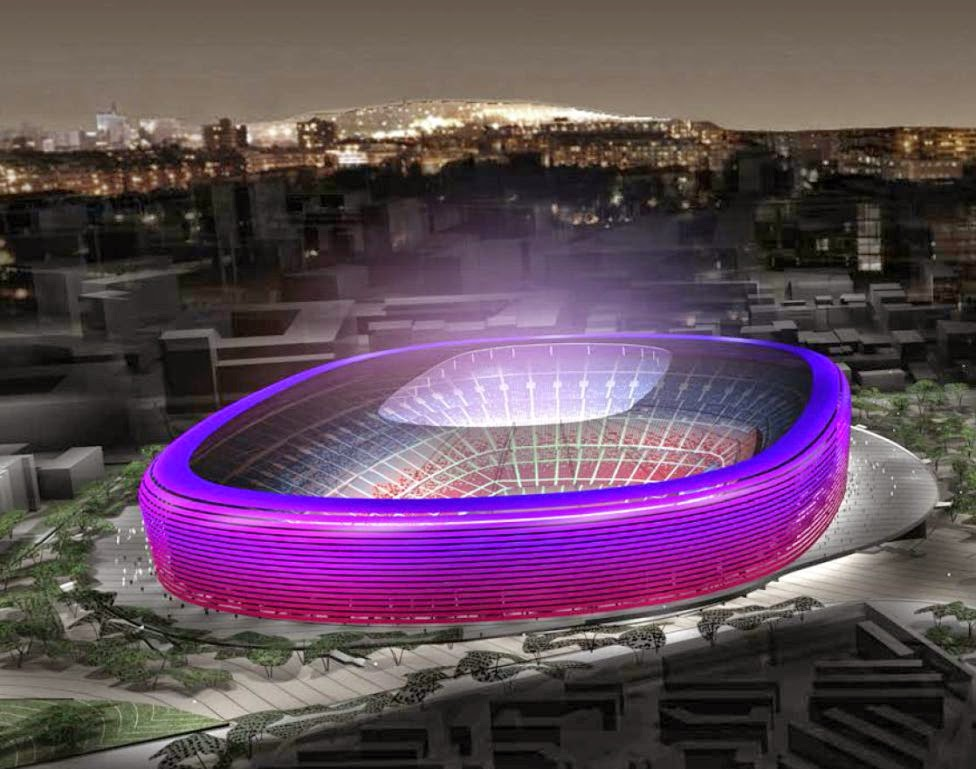
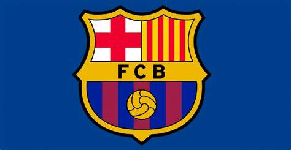
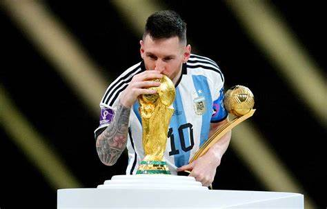
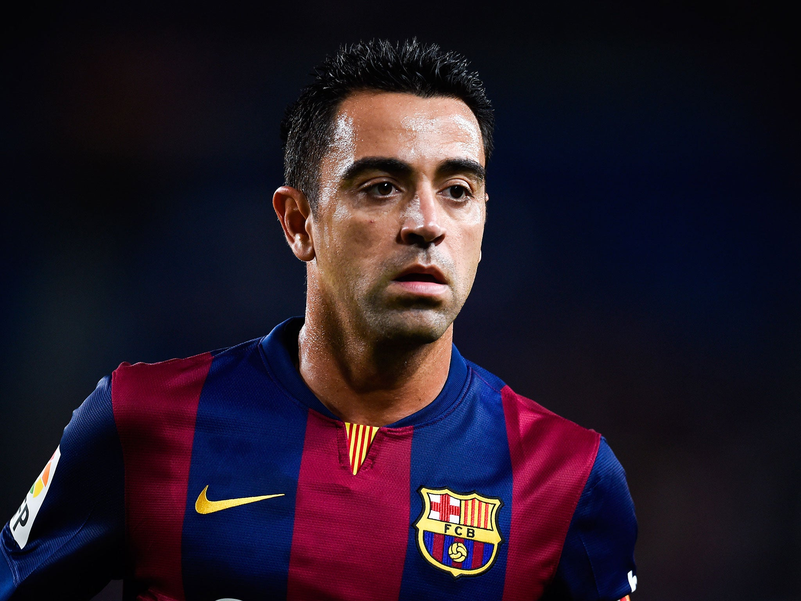
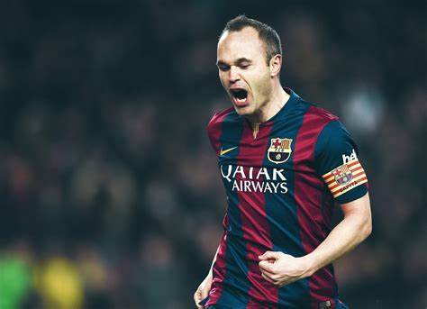
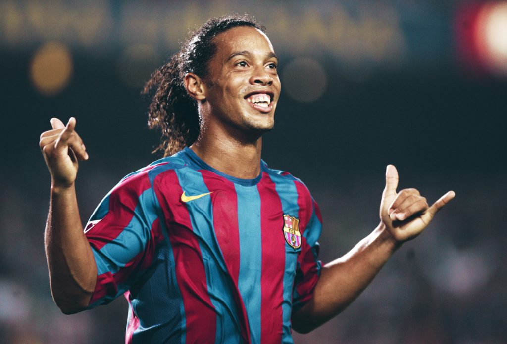
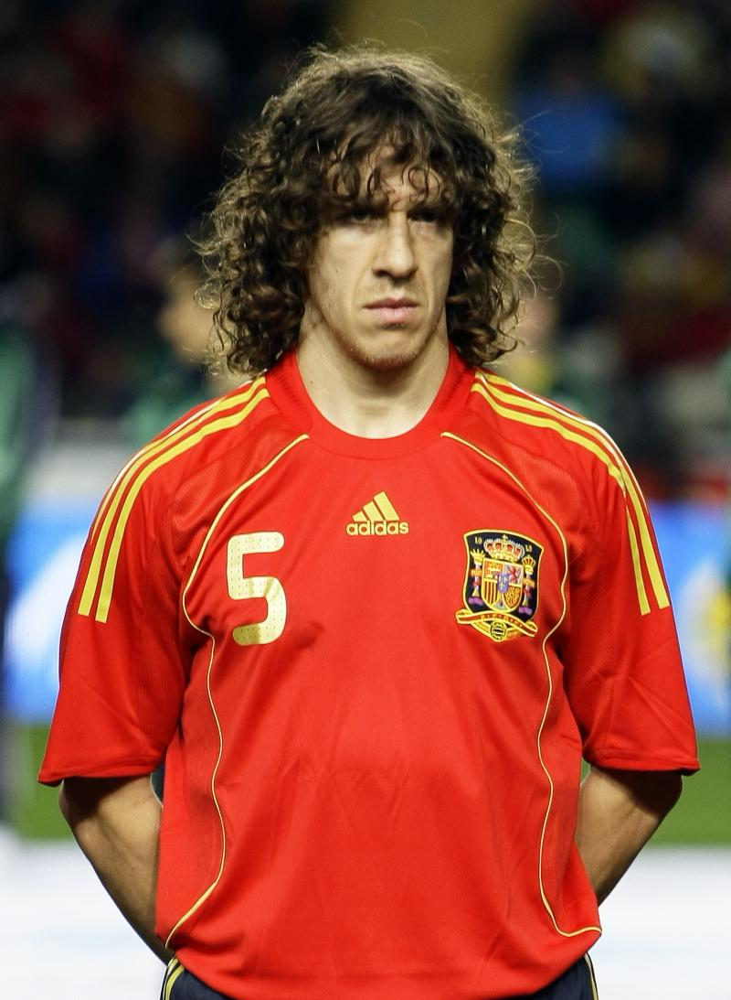
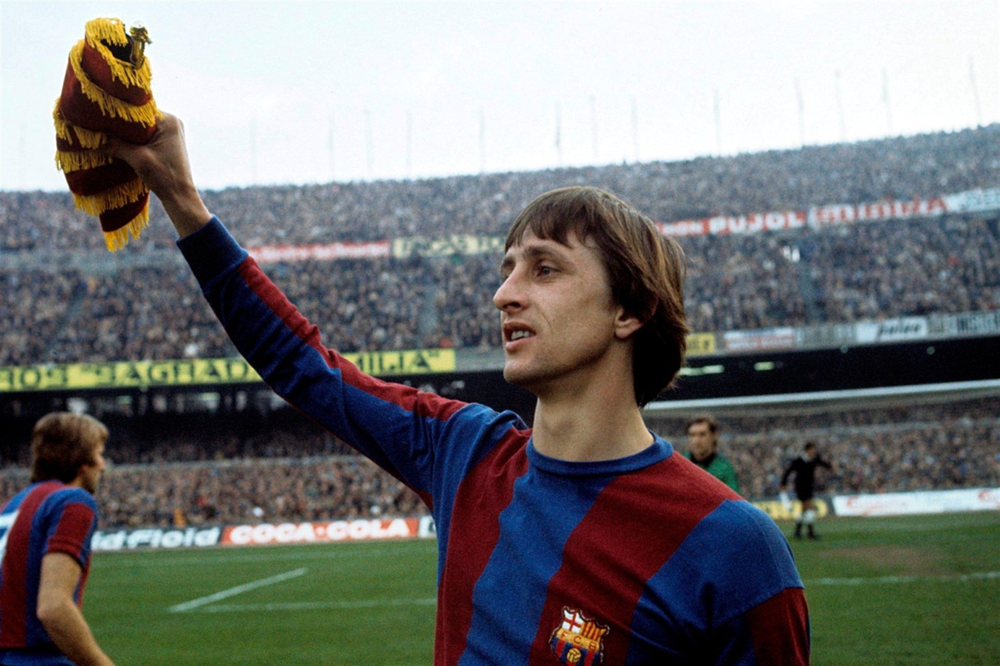

Historia del Club
El Fútbol Club Barcelona fue fundado el 29 de noviembre de 1899 por un grupo de futbolistas suizos, ingleses y catalanes. Desde entonces, se ha convertido en uno de los clubes más grandes y exitosos del mundo.
El Barça ha ganado numerosos títulos nacionales e internacionales, incluyendo múltiples campeonatos de La Liga, Copas del Rey y Ligas de Campeones de la UEFA. También es conocido por su filosofía de fútbol ofensivo y por haber formado a jugadores legendarios como Messi, Xavi e Iniesta.
Escudo del Club
El escudo del club representa la identidad catalana, el amor por el deporte y la historia rica del Barça. Es uno de los escudos más reconocidos en el mundo del fútbol.
Video: Partido del FC Barcelona
Video de leyendas del barcelona:
Jugadores Históricos
Algunos de los jugadores más icónicos que han vestido la camiseta blaugrana:
- Lionel Messi 
- Xavi Hernández 
- Andrés Iniesta 
- Ronaldinho 
- Carles Puyol 
- Johan Cruyff 